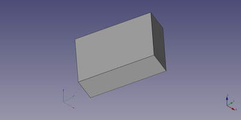

Part Box/cs
|
Part Kvádr |
| Umístění Menu |
|---|
| Díl → Základní tvary → Krychle |
| Pracovní stoly |
| Part |
| Výchozí zástupce |
| Nikdo |
| Představen ve verzi |
| - |
| Viz také |
| Part Základní tvary |
Popis
Příkaz  Part Krychle vytvoří parametrické krabicové těleso, tedy pravoúhlý kvádr. V souřadnicovém systému definovaném vlastností ÚdajePlacement leží spodní plocha krychle na rovině XY, přičemž její přední levý roh leží v počátku a její přední hrana je rovnoběžná s osou X.
Part Krychle vytvoří parametrické krabicové těleso, tedy pravoúhlý kvádr. V souřadnicovém systému definovaném vlastností ÚdajePlacement leží spodní plocha krychle na rovině XY, přičemž její přední levý roh leží v počátku a její přední hrana je rovnoběžná s osou X.
{kind=link}
Použití
- Příkaz lze spustit několika způsoby:
- Klikněte na tlačítko
 Krychle.
Krychle. - Z menu vyberte možnost Díl → Základní tvary → Krychle.
- Klikněte na tlačítko
- Je vytvořen objekt typu Krychle.
- Rozměry a ÚdajePlacement krychle můžete případně změnit jedním z následujících způsobů:
- Poklepejte na objekt ve stromovém zobrazení:
- Otevře se panel úloh Geometrické základní prvky.
- Změňte jednu nebo více vlastností.
- Objekt se ve 3D zobrazení dynamicky aktualizuje.
- Stiskněte tlačítko OK a zavřete panel úloh.
- Změňte vlastnosti v okně vlastností.
- Nahraďte ÚdajePlacement příkazem
 Transformovat.
Transformovat.
- Poklepejte na objekt ve stromovém zobrazení:
Příklad
{kind=link}

Zde je zobrazen objekt Part Krychle, vytvořený pomocí níže uvedeného příkladu skriptování.
Poznámky
- Part součást Kvádr lze vytvořit také pomocí příkazu
 Part Základní tělesa. Pomocí tohoto příkazu můžete při vytváření zadat rozměry a umístění.
Part Základní tělesa. Pomocí tohoto příkazu můžete při vytváření zadat rozměry a umístění.
Vlastnosti
Viz také: Zobrazení vlastností.
Objekt Part Kvádr je odvozen od objektu Part Feature a přebírá všechny jeho vlastnosti. Má navíc následující vlastnosti:
Data
Attachment
Objekt má stejné vlastnosti připojení jako Part Part2DObject.
Box
- ÚdajeLength (
Length): The length of the box. This is the dimension in its X-direction. The default is10mm. - ÚdajeWidth (
Length): The width of the box. This is the dimension in its Y-direction. The default is10mm. - ÚdajeHeight (
Length): The height of the box. This is dimension in its Z-direction. The default is10mm.
Scripting
See also: Autogenerated API documentation, Part scripting and FreeCAD Scripting Basics.
A Part Box can be created with the addObject() method of the document:
box = FreeCAD.ActiveDocument.addObject("Part::Box", "myBox")
- Where
"myBox"is the name for the object. - The function returns the newly created object.
Example:
import FreeCAD as App
doc = App.activeDocument()
box = doc.addObject("Part::Box", "myBox")
box.Length = 4
box.Width = 8
box.Height = 12
box.Placement = App.Placement(App.Vector(1, 2, 3), App.Rotation(75, 60, 30))
doc.recompute()
- Creation and modification: New Sketch, Extrude, Revolve, Mirror, Scale, Fillet, Chamfer, Face From Wires, Ruled Surface, Loft, Sweep, Section, Cross-Sections, 3D Offset, 2D Offset, Thickness, Project on Surface, Appearance per Face
- Boolean: Compound, Explode Compound, Compound Filter, Boolean Operation, Cut, Union, Intersection, Connect Shapes, Embed Shapes, Cutout Shape, Boolean Fragments, Slice Apart, Slice to Compound, Boolean XOR, Check Geometry, Defeaturing
- Other tools: Box Selection, Shape From Mesh, Points From Shape, Convert to Solid, Reverse Shapes, Simple Copy, Transformed Copy, Shape Element Copy, Refine Shape, Set Tolerance, Persistent Section Cut, Attachment
- Preferences: Preferences, Fine tuning
- Getting started
- Installation: Download, Windows, Linux, Mac, Additional components, Docker, AppImage, Ubuntu Snap
- Basics: About FreeCAD, Interface, Mouse navigation, Selection methods, Object name, Preferences, Workbenches, Document structure, Properties, Help FreeCAD, Donate
- Help: Tutorials, Video tutorials
- Workbenches: Std Base, Assembly, BIM, CAM, Draft, FEM, Inspection, Material, Mesh, OpenSCAD, Part, PartDesign, Points, Reverse Engineering, Robot, Sketcher, Spreadsheet, Surface, TechDraw, Test Framework
- Hubs: User hub, Power users hub, Developer hub